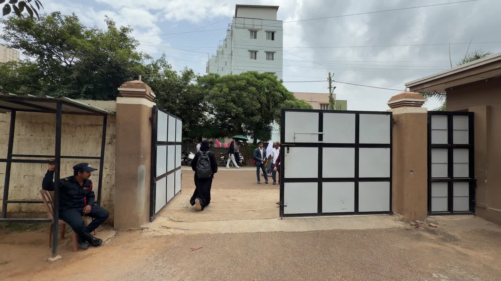
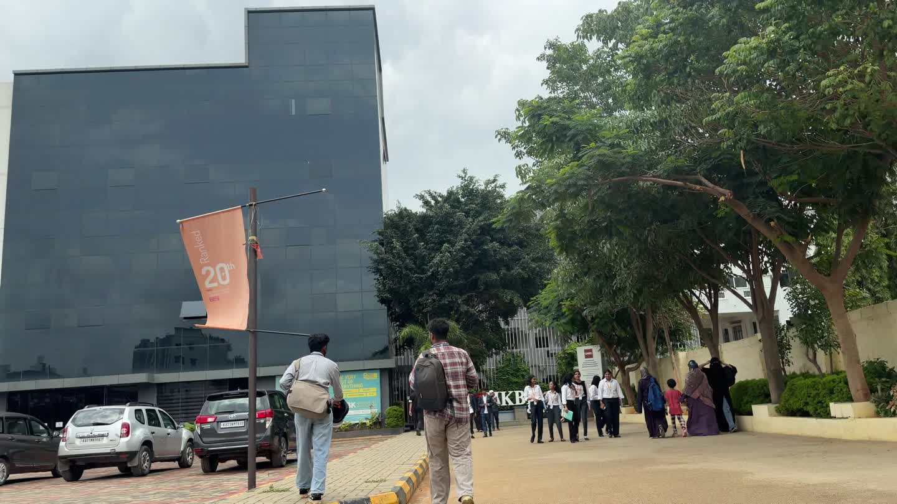
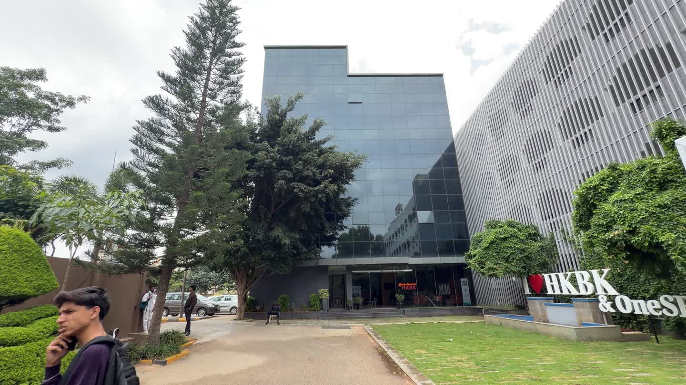
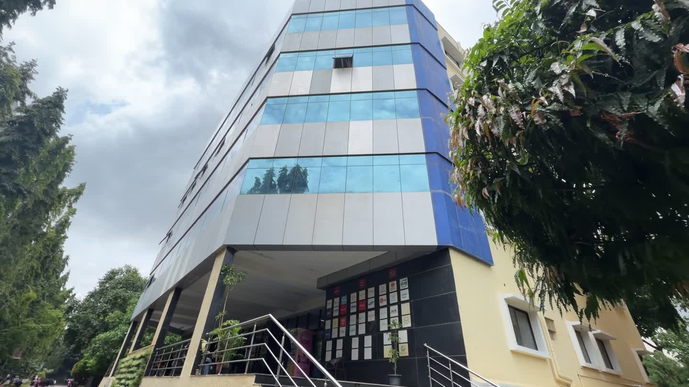

CLLG Campus / Field Notes 01
A campus best read on foot.
Follow a curated photo route from the gate to the Main Block, one frame and one landmark at a time.

The route atlas
Choose a starting point.
Four verified chapters make the long walk easy to enter. Start at the gate, jump into the approach, or go straight to the Main Block.
-
01 / 01—07
At the gate
Begin at the threshold and orient yourself to the campus.
-

02 / 08—15Walking onto campus
Continue past the approach and into the everyday campus rhythm.
-

03 / 16—25Approaching the Main Block
Follow the route as the campus landmark comes into view.
-

04 / 26—125Around the Main Block
Explore the longest chapter with the remaining campus views.
A note on the walk
Made from the route, not a map.
This is a curated photo walk, not continuous 360-degree or free-roaming coverage. Use the forward and back controls inside the explorer to move through the selected views, or return here to choose another chapter.